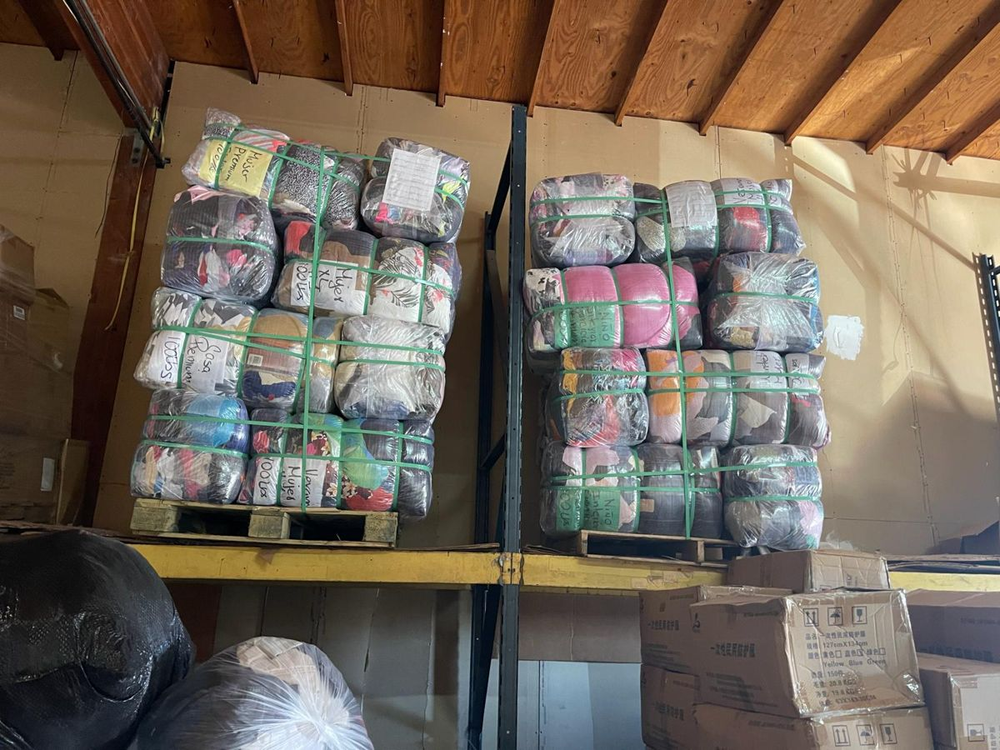
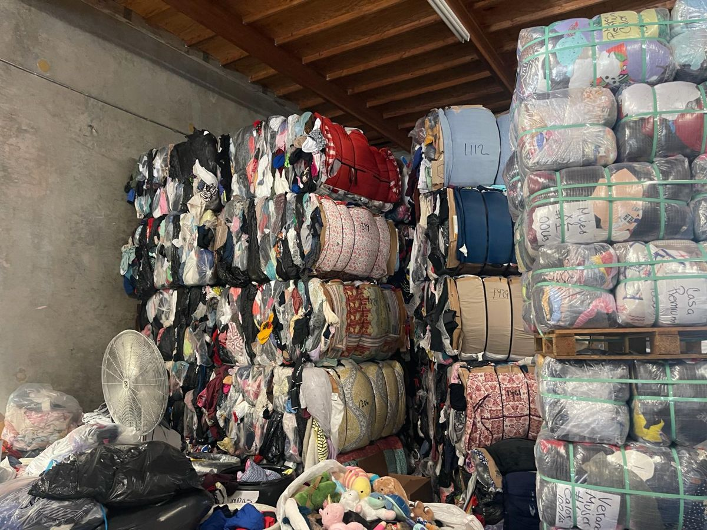
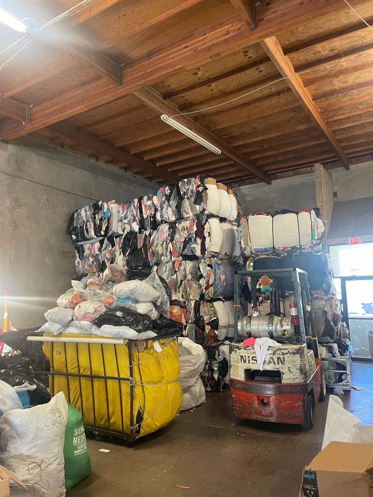
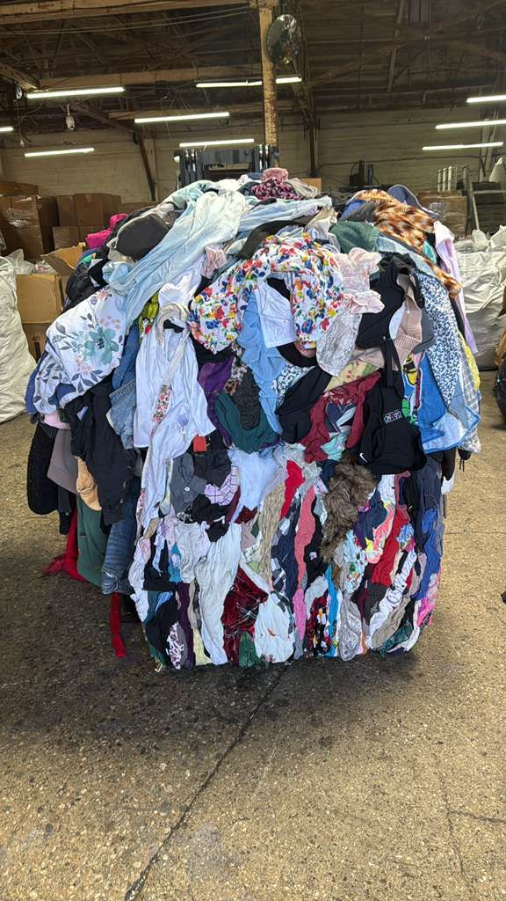
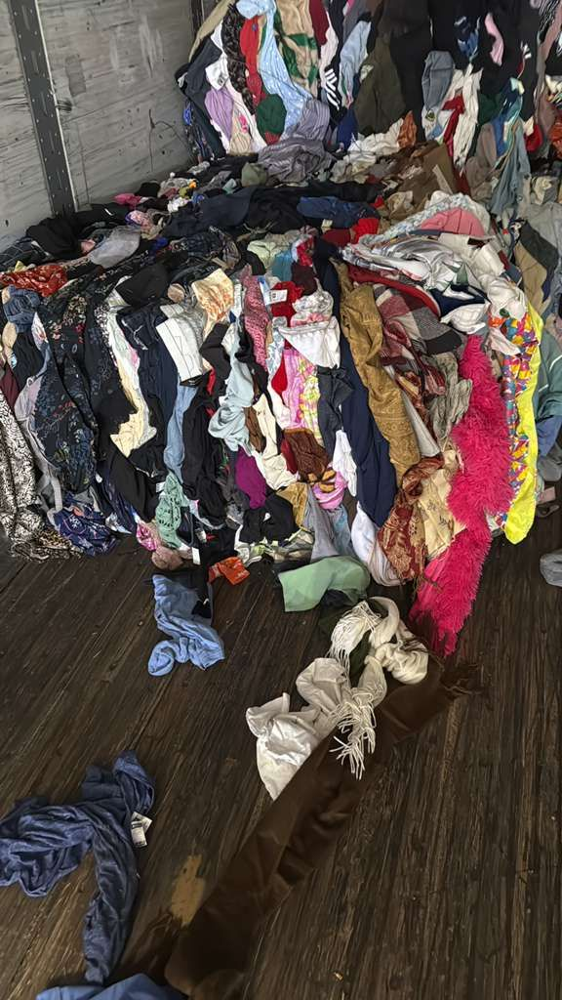
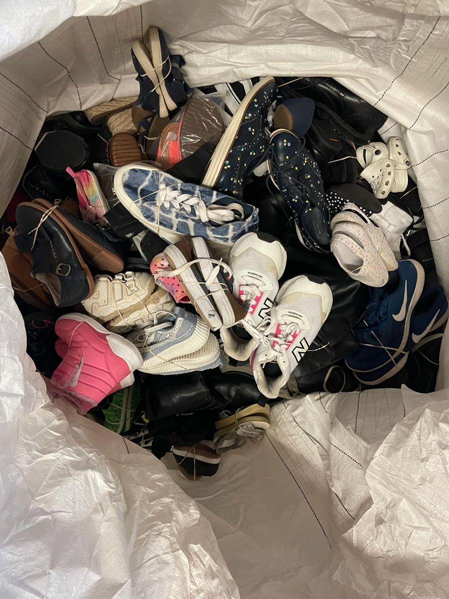

Connecting Collection, Reuse & Global Markets
Repurpose Textiles operates at the intersection of textile collection, reuse, and wholesale trade.
Request a quoteMessage on WhatsAppStock packed for shipping
Clothing is baled, strapped and palletized so it travels safely to buyers.


Two Divisions. One Purpose.
Textile Collection & Donation Partnerships
We aim to develop collection initiatives that make it easier for communities and organizations to direct reusable clothing and textiles toward productive use.
We welcome discussions with charities, nonprofit organizations, property owners, shopping centers, and other potential collection partners.
Explore Collection PartnershipsWholesale & Global Textile Trade
We aim to connect textile suppliers with wholesale buyers, graders, recyclers, and international markets through dependable B2B relationships.
Our wholesale focus includes used clothing, footwear, and other textile-related product categories, subject to availability.
Explore Our ProductsWhy Repurpose Textiles?
A Reuse-First Mindset
We recognize the value of extending the useful life of textiles wherever practical.
Partnership-Driven Approach
We believe sustainable business growth comes from dependable relationships with suppliers, buyers, and collection partners.
Commercially Focused Solutions
We aim to connect available textile materials with appropriate wholesale, reuse, and recovery opportunities.
A Broader Perspective on Textiles
We look beyond disposal and focus on opportunities to keep usable materials in circulation for longer.
A look at our stock
A few photos of the clothing and footwear we handle.




Let’s Create New Opportunities for Textiles.
Whether you’re looking to establish a collection partnership, source used clothing in bulk, or explore a wholesale trading relationship, we’d welcome the opportunity to connect.
Let’s discuss how we can work together.
Contact us